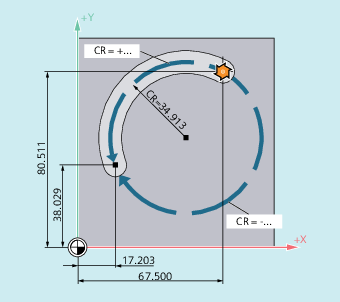

Kreisinterpolationsvariante, die den Radius und Endpunkt eines kreisförmigen Konturelements für die Interpolation verwendet.
| Hinweis |
|
Folgende Einschränkungen sind bei der Kreisinterpolation mit Radius und Endpunkt zu beachten:
Abhilfe: Zur Programmierung von Voll- oder Halbkreisen eine andere Kreisinterpolationsvariante verwenden! |
Syntax
G2/G3 X… Y… Z… CR=±...Bedeutung
| Kreisinterpolation im Uhrzeigersinn | |
Wirksamkeit: | modal | |
| Kreisinterpolation im Gegenuhrzeigersinn | |
Wirksamkeit: | modal | |
| Kreisendpunkt in kartesischen Koordinaten Abhängig von der aktuell gültigen Maßangaben-Einstellung | |
| Kreisradius Durch das Vorzeichen wird angeben, ob der Verfahrwinkel größer oder kleiner 180° sein soll. Ein positives Vorzeichen kann entfallen. | |
| Verfahrwinkel ≤ 180° | |
| Verfahrwinkel > 180° | |
Hinweis | ||
Beispiele
Beispiel 1: Fräsen
| Programmcode | |
|---|---|
| N10 G0 X67.5 Y80.511 | |
| N20 G3 X17.203 Y38.029 CR=34.913 F500 | |
| ... |
Beispiel 2: Drehen

| Programmcode | |
|---|---|
| ... | |
| N125 G1 X40 Z-25 F0.2 | |
| N130 G3 X70 Z-75 CR=30 | |
| N135 G1 Z-95 | |
| ... |